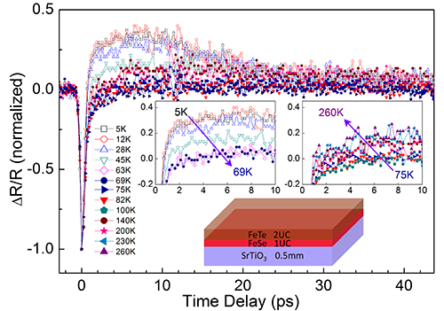
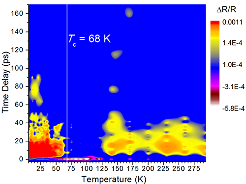
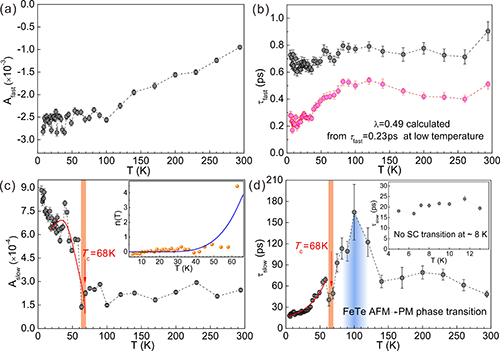
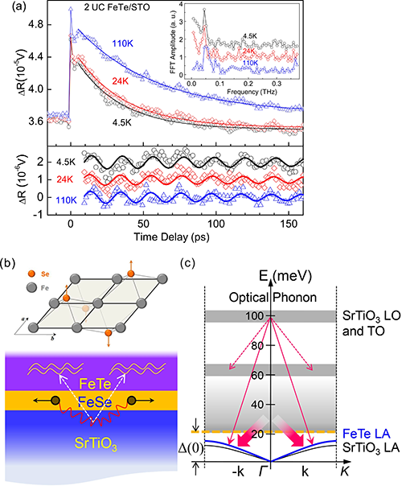

高温超导体
单层FeSe/SrTiO3界面超导体自2012年被发现［Chin. Phys. Lett. 29, 037402 (2012)］以来，其超导机理引起了广泛的关注。它的超导转变温度明显高于体材料FeSe，除了已有研究表明的其电子结构与体材料FeSe明显不同之外，该界面超导体系的电-声子相互作用与铁基超导体系里的异同也为人们所关注。此外，人们注意到原位测量与带覆盖层的样品的超导转变温度有所差异，覆盖保护层如何影响超导转变温度并不完全清楚［Nat. Phys. 10, 892 (2014)］。采用超快光谱方法研究单层FeSe/SrTiO3界面超导体系提供了从非平衡态角度进行研究的可能，且能通过准粒子寿命实验观测电-声子相互作用，是许多其它实验方法无法替代的。
最近，中国科学院物理研究所/北京凝聚态物理国家实验室（筹）表面物理实验室SF05组研究员赵继民与清华大学薛其坤院士/马旭村教授的研究组合作研究了该体系。通过时间分辨超快光谱的弱信号探测（图1），在单层FeSe/SrTiO3超导体中观测到了明显的超导相变（图2、图3），超导转变温度为68 (-5/+2) K。从图1时间分辨数据清楚可见，准粒子的超快（ps）动力学行为在70 K附近有明显的变化。图2更加明显地展示了在68 K附近有可能有一个超导相变，声子瓶颈（phonon-bottleneck）现象清晰可见。图3给出了定量的分析结果，其中图3（c，d）在68 K附近同时有变化，依据非平衡态的微观动态平衡Rothwarf-Taylor模型，这是超导相变。他们得到超导转变温度为Tc = 68 (-5/+2) K，超导能隙为Δ(0) = 20.2 ± 1.5 meV, 同时从图3（b）的快分量准粒子寿命可获得电-声子相互作用的大小，为 λ = 0.48，比同样采用超快光谱探测所得的体材料FeSe的电-声子相互作用大了3倍。此外，他们还在2个原胞厚度的FeTe覆盖层中观测到了相干态的声学支声子，它的存在为界面或衬底里的声子等配对胶水提供了额外的衰减通道（图4），从而导致配对胶水的减少或能量降低，这为覆盖层如何降低单层FeSe超导体的Tc提供了一种合理的解释。
该工作首次运用超快光谱方法在单原子层体系上观测到超导相变。单个原子层的光学反射信号微弱，需要排除覆盖保护层的干扰，他们克服了实验挑战，优选了覆盖层厚度，最终分辨出了超导相变信息。该工作展示了以超快光谱方法研究强关联体系的优势：时域展开的超快动力学过程，非接触的无损测量，单层/界面量子体系的相变，以及对配对玻色子相关物性的研究。
相关研究结果发表在最近的Physical Review Letters上【Ultrafast Dynamics Evidence of High Temperature Superconductivity in Single Unit Cell FeSe on SrTiO3, Phys. Rev. Lett. 116, 107001 (2016)】。
上述工作得到了国家自然科学基金项目、科技部量子调控重大科学计划和中国科学院对外合作重点项目的支持。
图1 不同温度下的单层FeSe/STO的超快动力学过程，在70 K附近出现转变。
图2 单层FeSe/STO的超导相变的定性证据。
图3 超导相变的超快动力学定量证据：快、慢两分量的幅度和准粒子寿命对温度的依赖。
图4 覆盖层中的相干态声学支声子，为界面或衬底里的配对胶水提供了额外的衰减通道，从而降低了Tc。